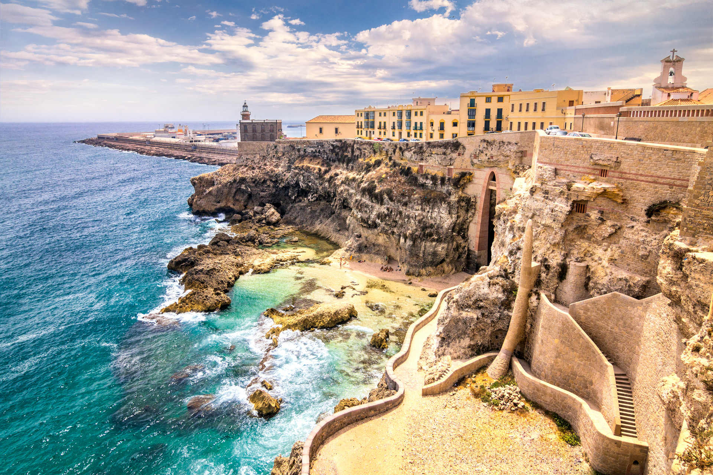
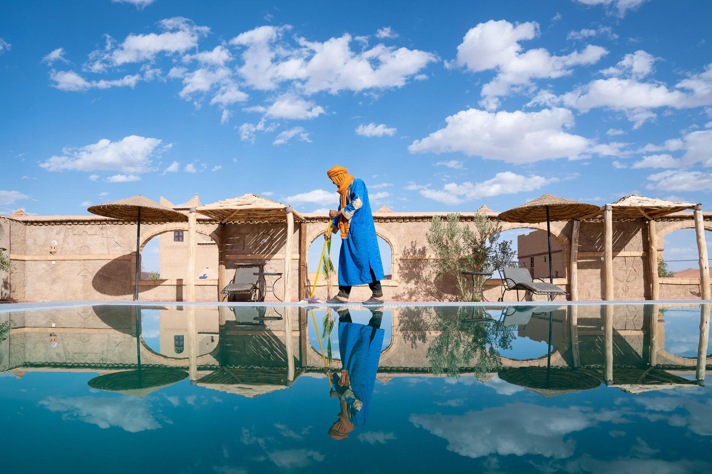
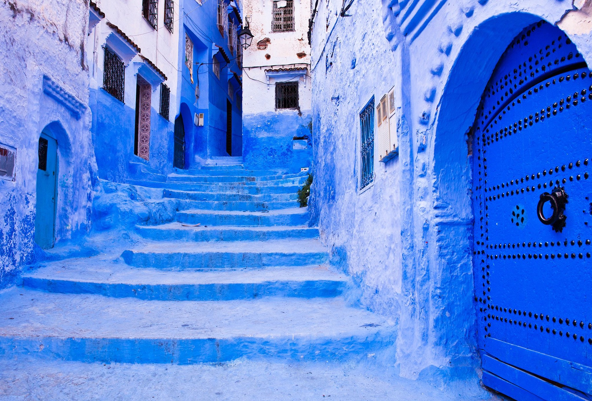

<div class="container project-view">
    
	<div class="row">
        <div class="col-md-4 project-images" align="center">
            
		</div>
		
        <div class="col-md-4 project-images" align="center">
            
		</div>

        <div class="col-md-4 project-images" align="center">
            
		</div>
		

 		<div class="col-md-12">
            <div class="project-info">
                <h2>Bali - Unbeatable Safari Experience</h2>

                <div class="details">
                    <div class="info-text">
                        <span class="title">Category</span>
                        <span class="val">Honeymoon</span>
                    </div>
                    
                    <div class="info-text">
                        <span class="title">Price</span>
                        <span class="val">INR 2,80,072 per couple onwards</span>
                    </div>

                    <div class="info-text">
                        <span class="title">Location</span>
                        <span class="val">Morocco</span>
                    </div>
                </div>

				
				Experience the highlights and hidden gems of Morocco on an enchanting 17-day ‘Absolute Morocco' tour, showcasing the country’s incredible diversity, 
				from coastal Agadir, Essaouira, Casablanca, Rabat and Tangier to inland Fez, Erfoud, Ait Benhaddou and Marrakesh.

				<p>
				Soak up the culture and history of this fascinating country from bustling medinas to ancient palaces, via breathtaking mountain scenery and the sweeping sands of the Sahara.
				</p>

				<br/>

				<span class="val">Package : </span>EXOTIC MOROCCO - 16N 17D<br/>
				<span class="val">Inclusions valid for two people : </span>
				
				<p>
				16 nights of premium accommodation such as the five-star Sofitel Rabat Jardin des Roses and the five-star Mövenpick Mansour Eddahbi Marrakech <br/>
				28 meals across the duration of the tour, including daily breakfast and five lunches and seven dinners <br/>
				Sightseeing per itinerary in a modern, air-conditioned coach <br/>
				The services of an English-speaking tour manager throughout <br/>
				Hotel taxes, fees and service charges <br/>
				Hotel porterage <br/>
				Entrance fees for destinations listed on itinerary <br/>
				</p>				
				
				<span class="val">Itinerary</span>
				
				<br/><br/>
				Day 1: Arrive in Casablanca and make your way to your hotel in Rabat, where you have the rest of the day at leisure to explore the capital city of Morocco. 
				This evening, attend an orientation meeting with your tour manager and fellow travellers, followed by a welcome dinner. (D)

				<br/><br/>
				
				Day 2: This morning, take a city tour of Rabat, Morocco's capital and second largest city. Rabat, which means “Fortified Place”, 
				displays all of the fine architecture one might expect to see. View the Royal Palace and the ancient ruins of Chellah, 
				a city that traces its origins to the Carthaginians and Phoenicians. Visit the Oudaya Kasbah and the Hassan Tower. Spend the afternoon at leisure.(B) (L)

				<br/><br/>

				Day 3: Depart for Tangier, a fascinating Moroccan city guarding the Strait of Gibraltar. Enjoy an orientation tour of Tangier, visiting the Cap Spartel and the cave of Hercules. 
				Enjoy free time for lunch and spend the rest of the day at leisure. Perhaps, sip mint tea in one of the cafes along the water, offering panoramic views of the Strait and Atlantic Ocean. 
				For dinner you might want to sample tajine pescado (fish stew), a regional specialty. (B)

				<br/><br/>

				Day 4: This morning, take a tour of Tangier. The city has served as Europe's gateway to Africa for centuries. Its blend of international and cross-cultural influences is unique in Morocco. 
				Visit the Tangier American Legation, an elegant five-storey mansion located in the medina. It is the only American National Historic Landmark outside the US. 
				Walk through Perdicaris Parc, a lush natural landscape within the city. 
				Experience the atmosphere of the Grand Soco, Tangier’s largest market, as well as the legendary kasbah. (B) (L)

				<br/><br/>

				Day 5: Depart Tangier and head south to Fez. Along the way stop at Chefchaouen, nestled in Morocco’s Rif Mountains. 
				The city is known as "The Blue Pearl" and is painted in various shades of blue, a custom that dates back to the 15th century, 
				when an influx of Jews escaping the Spanish Inquisition settled in Chefchaouen. They brought along the tradition of painting buildings blue to mirror the sky and remind them of God. 
				Afterward, continue to mystical Fez, one of the four imperial cities of Morocco. Take a short bus tour of the city conducted by your tour manager on the way to the hotel. (B)

				<br/><br/>

				Day 6: Enjoy a full day at leisure to wander the old medina yourself, or choose to take a guided optional tour where you will visit the 
				\many hidden treasures of the medina that only a Moroccan guide will know. Fez served as the capital of Morocco for more than 400 years and is home 
				to the University of Al Karaouine, the oldest operating university in the world. It is particularly famous for its tanneries and the Fes el Bali Medina. 
				A short visit to the surrounding leather shops gives you the best view of the tanneries. See the Attarine Medersa, Moulay Idriss mausoleum, 
				and visit the Nejjarine Fountains and Museum. Opportunities for shopping for authentic Moroccan carpets will be provided. Finally, 
				view the exterior of the Royal Palace and walk through the famed Jewish quarter of the medina. Though the city has endured periods of hardship, 
				it has emerged more vibrant than ever, boasting its own distinctive culture, art, and even cuisine. 
				This evening, enjoy a special dinner hosted by a local family and learn about Moroccan culture and traditions. (B) (D)

				<br/><br/>

				Day 7: This will be a long and rewarding touring day. After breakfast, depart for Erfoud via the montane cedar woods of the 
				middle Atlas Mountains, passing by Ifrane, a charming ski resort. Continue to Erfoud via Errachidia and the lush Ziz Valley. 
				Arrive to your Erfoud hotel in the early evening (B) (L) (D)

				<br/><br/>
				Day 8: This morning, depart to explore the small city of Rissani, on the edge of the Sahara. En route, stop at a 
				fossil factory to learn more about this unique activity which is famous in the region. Time permitting, you will visit a local community center and 
				learn about the community first hand. Upon arrival to Rissani, tour the lively souk and visit an 18th-century ksar. Next, 
				discover the ancient ruins of Sijilmasa on the River Ziz, once a bustling Berber city and medieval trade depot. 
				Return to Erfoud for an afternoon at leisure or join the optional tour of the Sahara, including a camel ride into the desert. 
				After sunset, return to your hotel (B) (D)

				<br/><br/>
				Day 9: This morning, continue your journey to Tinghir via the Tinjdad Road. View the magnificent Todgha canyons, which rise to a towering 800 feet. 
				After a brief stop in the Dades Canyons, continue to Ait Benhaddou via the road of the thousand Kasbahs, and the Dades Valley, famous for its roses. 
				Arrive at the hotel in Ait Benhaddou later in the evening. (B) (L) (D)


				Day 10: After breakfast, visit the UNESCO World Heritage Site of Ait Benhaddou, a ksar - or fortified city - along a former caravan route. 
				Its desert-dusted Kasbah and maze-like warrens are sure to enthrall you. The ksar has served as a backdrop in film and TV productions 
				from Gladiator to Game of Thrones. Next, make your way to the magical city of Marrakesh for overnight (B) (L)

				<br/><br/>
				
				Day 11: After breakfast, enjoy a morning tour of the city. Visit the Saadian Tombs, dating back to the 16th century, where Saadian royalty found their final resting place. 
				Your tour also includes the Koutoubia Minaret, as well as the beautiful Bahia Palace. 
				Finally, end the tour by walking through the medina, getting a chance to admire all of the different artisans 
				performing their craft before arriving at the Djemaa el Fna Square. Spend the afternoon at leisure for individual exploration, or perhaps join the optional tour 
				where you will have a chance to watch couscous being made while enjoying a traditional lunch, as well as visiting the Majorelle Gardens.(B)

				<br/><br/>

				Day 12: Today, the entire day is yours to explore the city on your own. Perhaps head to the Dar Si Said Museum, a homage to the influence of wood in Moroccan crafts. 
				Consider a visit to the Souks, the famed markets of the city. Here, you'll find everything from handicrafts to spices to clothing. 
				Perhaps join the morning optional Ourika Valley tour. The Ourika Valley rises slowly to the first hills of the High Atlas, 
				where typical Moroccan villages are scattered amidst the towering mountains. See the natural majesty of Morocco at its finest, 
				a pristine and marvellous place where only the birds disturb the silence. Tonight attend the optional dinner with horse-drawn carriage ride. (B)

				<br/><br/>

				Day 13: After breakfast, head south towards the resort town of Agadir, in the foothills of the Anti-Atlas Mountains. 
				Upon arrival, check into your hotel and spend time at leisure. Maybe decide to partake in an optional Berber massage. 
				The ancient Berbers were a nomadic people who were constantly on their feet, moving from place to place. 
				The massage begins with a foot and leg rub, ending with a full-body deep muscle massage. Tonight, head to the beachfront promenade, 
				lined with a wide variety of restaurants and cafe. (B)

				<br/><br/>

				Day 14: Embark on a city tour of Agadir, where you will have the chance to view the beaches of this former fishing village as well as the hilltop ruins of the old kasbah. 
				It was at Agadir that the European conflict began between Germany and France, opening the door for France to seize nearly all of Morocco. 
				This afternoon, set out for the city of Essaouira. Along the way, stop at the Marjana Cooperative to view traditional methods of extracting Argan Oil. 
				Free time this evening to explore the city on your own before dinner with the group. (B) (D)

				<br/><br/>

				Day 15: Enjoy a guided tour through Essaouira's medina, a UNESCO World Heritage Site and an excellent example of a fortified North African town. 
				Spanish cannons still line the battlements while parasols dot the harbour's beaches, creating a remarkably picturesque setting. 
				Explore the many souks in the medina, including the spice and jewellery souks. The city is also famed for hosting the Gnaoua World Music Festival, 
				which draws musicians from across the world who come to play with the Gnaoua mystics. Spend the rest of the day at leisure. (B)

				<br/><br/>

				Day 16: Today, journey to Casablanca, the largest city in Morocco. Casablanca's history goes back thousands of years as the 
				Berbers established settlements there around the 10th century BC. Along the way, stop for lunch before continuing to Casablanca. Tonight, enjoy a Farewell Dinner. (B) (D)

				<br/><br/>
				Day 17: Make your own way to the airport for your departure flight. (B)

				<br/><br/>
				<br/><br/>

				<span class="val">Cancellation Policy : </span>
				If Cancelled 30 Days Prior To Check-In Date – 25% Penalty of package cost.  Within 30 Days – 100% Penalty of package cost.

             </div>
        </div>
    </div>
</div>